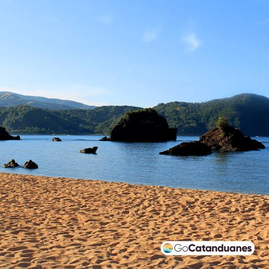
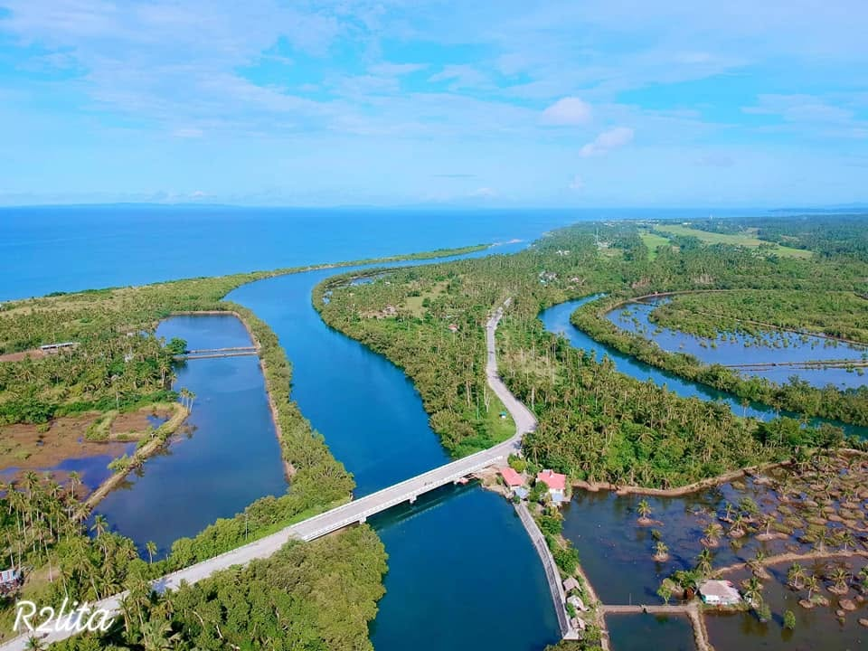

The Heart of Southern Luzon
The Bicol Region, also called Region V, sits at the southeastern tip of Luzon. It is made up of six provinces: Albay, Camarines Norte, Camarines Sur, Catanduanes, Masbate, and Sorsogon.
It is best known for Mayon Volcano, its beautiful cone shape rising above rice fields and coconut groves. But Bicol is more than one mountain. It has forests to hike, waves to surf, islands to hop, and spicy coconut dishes you will never forget.
Read Our StoryEverything Under Bicol
Albay
Capital: Legazpi CityHome of the perfect-coned Mayon Volcano.
Camarines Norte
Capital: DaetGold-sand islands, surf breaks, and quiet coves.
Camarines Sur
Capital: PiliAdventure capital: karst islands, forests, wakeboarding.
Catanduanes
Capital: ViracThe windswept island where the Pacific meets the cliffs.
Masbate
Capital: Masbate CityCowboy country with marine sanctuaries and rodeos.
Sorsogon
Capital: Sorsogon CityWhale sharks, crater lakes, and the gateway to the Visayas.
Postcards From Bicol



